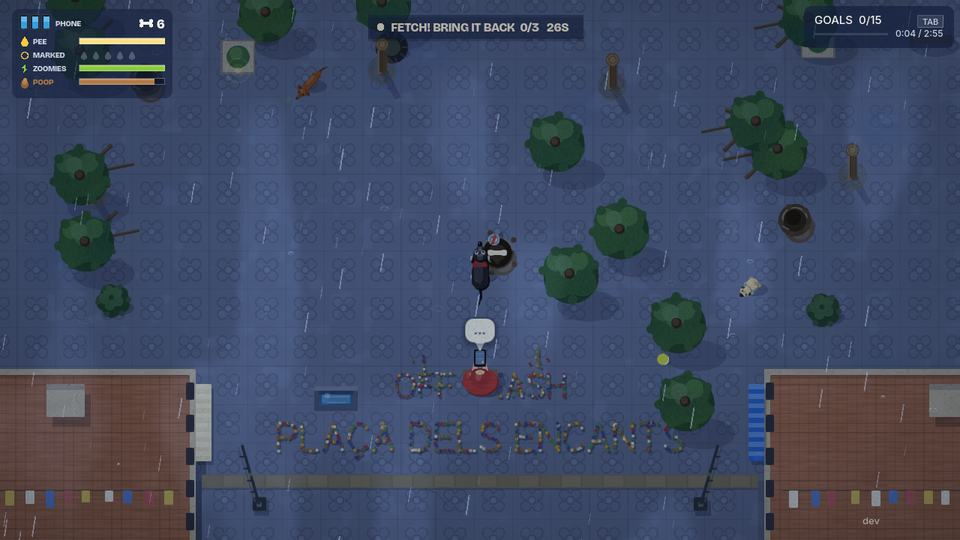

Els Encants
Flea-market junk under a mirror
Barcelona's old flea market at Glòries on a rainy morning: lanes of stalls heaped with junk, an auction ring, and a seller's tower of chairs that will not stay up. Steal a sock off a stall and bring it to your human on the way to Plaça dels Encants.
- Off-leash stop
- PLAÇA DELS ENCANTS (Fenced dog yard)
- Beat the clock
- Under 2:55
Screenshots



Goals (15)
- Mark 5 spots
- Have 4 good long sniffs
- Get the phone home without a scratch
- Get yourself home without a bump
- Get your business bagged
- Bring the ball back 3 times
- Steal a sock off a stall and bring it to your human
- Plant and hold your human clear of a spill
- Bark at the auction
- Scarf down 2 dropped snacks
- Land an x3 trick combo
- Nab the churro from the snack stall
- Spell LEASH
- Find the hidden pernil
- Beat the clock (under 2:55)